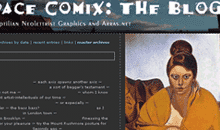

|
Brian Kim Stefans interview, page 5 GB: What you can not stand on the web and on print? BS: I can't stand that my last book, Angry Penguins, is still sitting in their boxes in my apartment, never to be sold or even given away, and that my first book is collecting dust in the basement of the Segue building. I can't stand that a power surge or some sort of virus could eat up everything I've ever done on the web so that it disappears from history, or that time itself will eventually render all of my work unreadable in the future. GB: Why does it annoy you so much? You seem to be so conscious about the "digital resistance" to preservation (your grandson will not be able to check your Flash 5 pieces)... BS: I was being a little glib in those answers— certainly, those fears don't keep me up at night, but it sometimes does bother me that the pieces will never make their presence known in the world of objects, never break in a way that leaves trails on the ground or which can be fixed by humans with crafty, careful hands. I do see internet work as "performance art" in the sense that ephemerality is built in to the entire practice— some limited group of people will experience and remember them, a bond or community could exist around this memory— but then again, it seems a waste to spend so much time trying to get some dissolve to look just right, some mouse action to flow smoothly, only to see it trashed with the new release of a Flash player. All of the Java I wrote for my poems (like "Naif and the Bluebells") is garbage now. For the heck of it, I converted "Dreamlife of Letters" to Quicktime recently and noticed that some of the best parts, like the Oedipal "o" circle, didn't render properly at all. (In fact, there was just a long stretch of blank orange screen, which I hope would suggest to my future viewer that a plug-in failure was occurring.) So were that to be the final version of the piece—if, for some reason, no one thought it necessary to create a dependable Flash emulator—then that key moment (well, I think it's key) would be lost. There are, of course, many early films that we watch without having any idea how they looked on fresh prints, running through period projectors, and in the old theaters on small screens. One just hopes that the style of decay of a digital art piece is as interesting to observe as that of a piece of celluloid— possible but not likely.). But my sense is that, like with drama, one would only be able to appreciate the work with some documentary description of what it looked like on a small 17" screen powered by some ancient hunk of junk called a G4, just like we don't know how David Garrick acted on the 18th century stage but he remains in the cultural memory (somewhere). GB: "The Dreamlife of Letters" is very cinematic. Are movies and television important for you.? BS: Movies are, but not television. My list of favorite directors is quite long, but on the top are Orson Welles, Jean Vigo, and Herzog when he worked with Kinski, etc. I'm not sure that I use cinematic techniques in my work unless it be what I've picked up from movie titles— this would be in "The Dreamlife of Letters"— but that certainly was not what I was trying to do. I've always thought Godard was a very important director for web artists and poets to look at closely— I write about this in "Reflections on Cyberpoetry," in which he becomes, indirectly, the Swinburne of our age (though the Situationists, of course, pilloried him). I think the greatest development has been, of course, the advent of digital cinema— the first two Dogma films, Russian Ark, that kind of thing, blow my mind. I was a televisions junky when I was a kid— I bought my first computer after winning a television trivia contest sponsored by a local newspaper— so perhaps I have been influenced in that I never want to be as passive a receptor as I was when I was a lonely kid tethered to the set. There's only so long you can sit in a movie theater. GB: You have some collaborative pieces. Is your intention to question the role of the author in your artistic work? BS: I guess I'm doing something like that, but I wouldn't want to suggest that this is a parameter of the work worth paying attention to. My sense is that many artists have gone on the record as critiquing the notion of "author" but have more or less become authors of some sort, or have fulfilled the "author function" in some other way that rendered the initial motivation moot. The more radical expressions of non-authorship— some of these crazy blogs that I've been coming across, for example, or the collaborative writings of the SI— are bound to remain obscure unless some scholar decides to go on the trail and put the story back together, at which point they enter a narrative of the author (the SI writings under the rubric of Debord and Vaneigem, for instance). I just don't see how the author is questioned so much anymore by collaborative works; the age of romantic "genius" is long past us, now all there is left is money— you take or leave it, "author" or not. (Insert smiley emoticon here.) The more interesting point is pseudonyms, avatar names, etc., but even in this case the trail of cultural capital will find its source. The only reason to really push a pseudonym (or many pseudonyms) is if you are doing something illegal (most of us aren't) or if you are mimicking a corporate model, like an artist's collective, which is very interesting if there is a real collective going on, with all of its attendant social aspects— more than the negation of the "author," but the "outing" of social desire. In this way, one participates as one does in a rock band, under a common name that acquires capital in its own fashion. Artists can act like hackers if they want to avoid being associated with common sources of income and capital, but unlike hackers they don't have any real control over the world's information networks, and, being vain like most artists are, will have to conform somewhat in their behavior, either by being comfortable with obscurity (and nurturing the hope that history will vindicate them) or uncomfortable and hence self-promoting, attending conferences, writing articles, applying for grants, etc. Ok, I'm being glib again— I'm actually not cynical. I would
love to do something more collaborative someday, indeed even form
a group. When I first started doing web projects, I didn't want to
sign my name to them even if I was the only creator involved. I invented
the name Reptilian Neolettrist Graphics for my credit in a book of
poetry by Stephen Rodefer that I designed a pseudo-Lettristic page
for. At this point I've collaborated with Kim Rosenfield, Darren Wershler-Henry,
Christian Bök and Dan Farrell (I set their books to the web),
and the other authors of Circulars. The more busy I get with
multiple projects, the less time I have to learn what needs to be
done, and I've learned through my (very modest) work in theater that
it's very fulfilling to work with people who are invested in a field
you will never yourself master. I'm not sure what kind of collaborative
work I would do in the future. It really depends on sharing a great
idea and being willing to nag each other to get it done. |